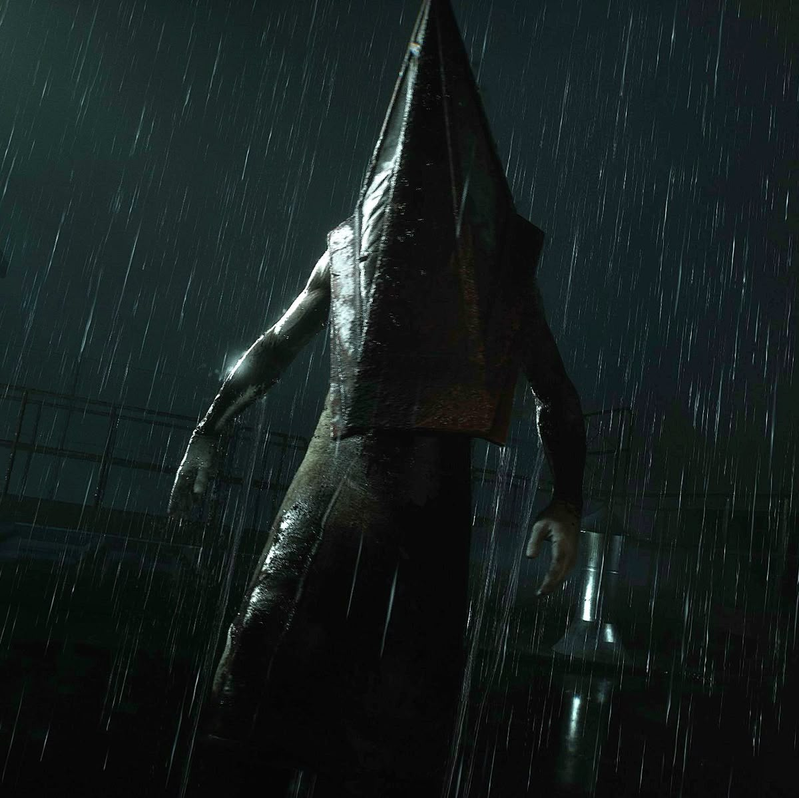
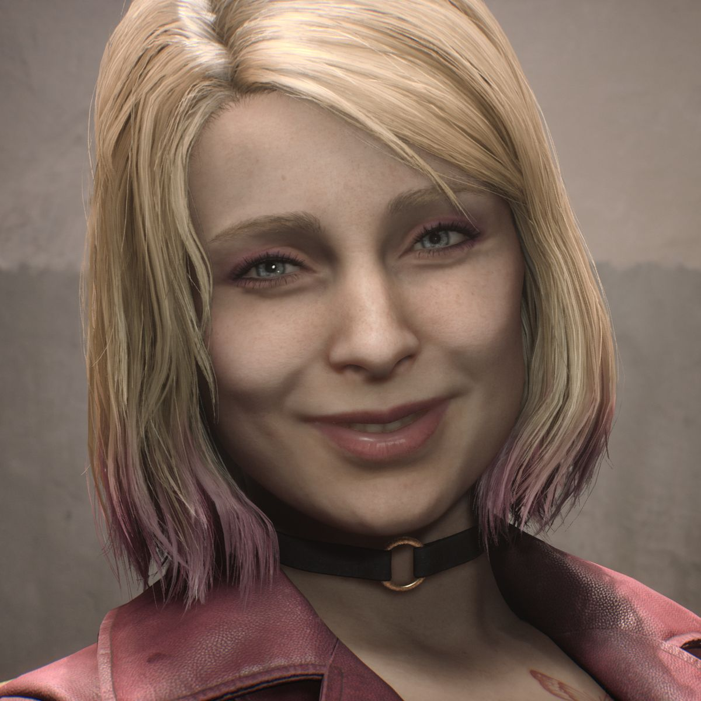
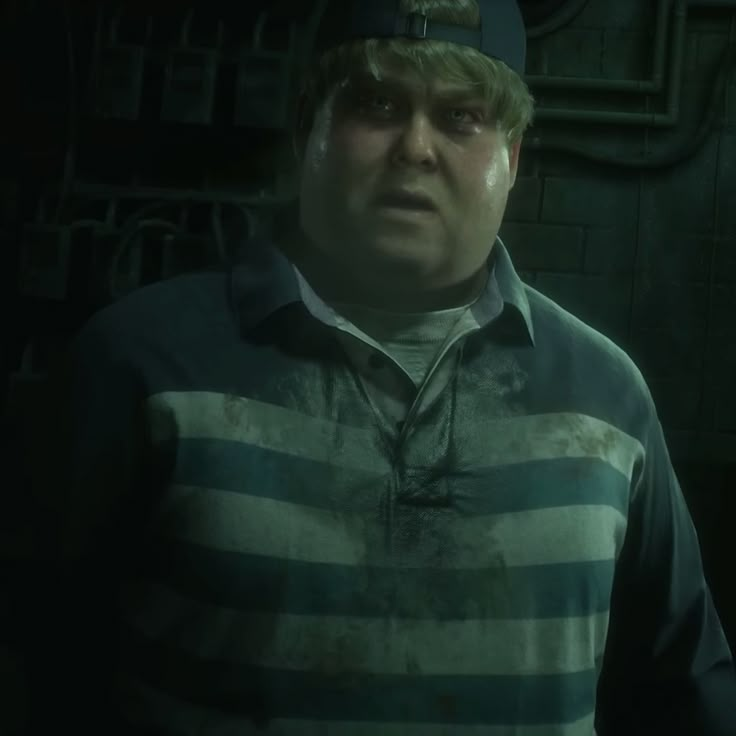

A detailed character-focused encyclopedia exploring the psychology,
symbolism, and hidden meanings behind iconic horror game characters.
Home
Silent Hill 2 Remake is widely regarded as one of the
most psychologically complex horror games ever created.
Unlike traditional horror games that rely on jump scares, Silent Hill 2
focuses on guilt, trauma, denial, and self-punishment.
This website explores the characters of Silent Hill 2 not as simple game
entities,
but as symbolic representations of the protagonist’s inner struggles.
The story follows James Sunderland, who receives a
letter from his deceased wife asking him to come to the town of Silent
Hill.
What begins as a search for answers slowly turns into a confrontation
with buried guilt and repressed memories.
Silent Hill 2 scores 4.91/5.0 on PlayStation Store
James Sunderland is the protagonist of Silent
Hill 2. He appears as an ordinary man, but his journey reveals a
deeply conflicted individual struggling with grief, denial, and
guilt.
Psychological Complexity
James’s perception of reality is unreliable. The town of Silent
Hill adapts itself to his subconscious, manifesting creatures
and events that reflect his emotional state. His calm demeanor
hides a mind that is actively suppressing the truth.
Story Hints and Foreshadowing
Monsters appear increasingly humanoid, hinting at personal
symbolism
Repeated references to sickness and suffocation
Mirrors and reflections suggesting self-confrontation
Key Traits
Trait
Description
Denial
Refuses to accept the truth about his past actions
Guilt
Manifested through the monsters of Silent Hill
Determination
Continues forward despite fear and confusion

PYRAMID HEAD
Pyramid Head is one of the most iconic figures
in horror gaming.
While often mistaken as the main villain, he serves a much
deeper symbolic role within the narrative.
Symbolism and Purpose
Pyramid Head represents James Sunderland’s desire for
punishment. His appearance is based on executioners from Silent
Hill’s history, emphasizing judgment rather than evil intent.
Was Pyramid Head Helping James?
Although violent, Pyramid Head forces James to confront
uncomfortable truths. He does not kill James directly, instead
pushing him toward realization. Once James accepts his guilt,
Pyramid Head disappears, indicating his purpose has been
fulfilled.
Abilities and Characteristics
Aspect
Description
Weapon
Great Knife / Spear
Movement
Slow but relentless
Symbolism
Judgment, guilt, punishment

MARIA
Maria appears to be a woman who looks almost
identical to James Sunderland’s deceased wife, Mary. However,
her personality, behavior, and presence differ in unsettling
ways.
Symbolic Role
Maria represents James’s denial and desire. She embodies an
idealized version of Mary — more affectionate, more available,
and free from illness. Her existence highlights James’s
inability to accept reality.
Repeated Deaths and Meaning
Maria repeatedly dies throughout the story, often in brutal
ways. These deaths symbolize the fact that James cannot maintain
his illusion. Each loss forces him closer to the truth he is
trying to escape.
Psychological Interpretation
She remembers events inconsistently
Her emotions change suddenly
She questions her own existence near the end
Maria is not meant to survive because she is not real in a
traditional sense. She exists solely as a product of James’s
mind and guilt.
Maria
Embodies desire and temptation
Represents hope and escape
Fleeting and fragile
Maria demonstrates that Silent Hill can create illusions of comfort
and desire. She challenges the protagonist to confront his longing and
guilt, showing that hope can be seductive but ultimately unstable.
ANGELA OROSCO
Angela Orosco is a deeply tragic character
whose story represents trauma, abuse, and self-blame. Her
presence shows that Silent Hill manifests differently for each
individual.
Personal Hell
Unlike James, Angela’s version of Silent Hill is constantly
burning. Fire symbolizes her inner pain, anger, and suffering
caused by years of abuse.
Connection to the Theme of Guilt
Angela believes she deserves punishment despite being a victim.
This contrasts with James, who struggles to accept
responsibility. Their encounters highlight different responses
to trauma.
Environmental Storytelling
Fire imagery represents emotional torment
Distorted rooms reflect mental instability
Her final scene suggests surrender rather than resolution
Angela’s story reinforces the idea that Silent Hill does not
judge — it reflects what already exists within a person.
Angela Orosco
Embodies trauma and despair
Represents confrontation with guilt
Haunted and unrelenting
Angela’s fate illustrates how Silent Hill exposes the weight of past
trauma. She cannot escape the darkness within, showing that unresolved
pain and guilt can consume a person completely.
LAURA
Laura is a young girl encountered in Silent Hill 2.
Unlike other characters, she appears emotionally unaffected by the
town’s horrors, behaving mischievously and confidently.
Psychological Role
Laura represents innocence and emotional clarity. Because she carries
no guilt or inner darkness, Silent Hill does not manifest monsters or
fear for her. Her presence contrasts sharply with James’s mental
torment.
Story Hints and Symbolism
Moves freely through Silent Hill without fear
Mocks and challenges James’s emotional weakness
Her letters reveal truths James avoids
Key Traits
Trait
Description
Innocence
Unaffected by Silent Hill’s psychological punishment
Honesty
Speaks openly, exposing James’s emotional denial
Defiance
Rejects authority and refuses to be controlled

EDDIE DOMBROWSKI
Eddie Dombrowski represents what happens when
isolation, humiliation, and resentment turn into violence. He
serves as a mirror of what James could become if he refuses
accountability.
Descent into Violence
Eddie initially appears frightened and defensive. Over time, he
becomes increasingly hostile, eventually embracing violence as
justification for his actions.
Contrast with James
Eddie Dombrowski
Rejects responsibility
Seeks justification
Consumed by resentment
Eddie’s fate demonstrates that Silent Hill does not force redemption.
It merely reveals who a person truly is.
Characters Relationship
The characters in Silent Hill 2 Remake are deeply
intertwined, not just narratively but psychologically. Each character
reflects a different aspect of James Sunderland’s mind and his
confrontation with guilt, trauma, and denial.
(image created google gemini nano banana ai)
Character
Relationship / Connection
James Sunderland
Pyramid Head: Represents punishment and
judgment; forces James to face his guilt.
Maria: Embodiment of desire and denial; mirrors
Mary but is an illusion.
Angela Orosco: Contrasts trauma; shows
suffering without denial.
Eddie Dombrowski: Reflects what James could
become if he rejects responsibility; a cautionary mirror.
Pyramid Head
Acts only in relation to James; disappears once James accepts
guilt.
Symbolic guide rather than villain.
Maria
Connected to James’s denial and unresolved desire.
Her repeated deaths emphasize the fragility of illusions.
Angela Orosco
Her suffering contrasts James’s guilt; highlights different
coping mechanisms.
Shows that Silent Hill adapts differently for each character.
Eddie Dombrowski
Represents isolation and resentment amplified into violence.
Serves as a mirror warning for James about possible outcomes.
Silent Hill 2 Easter Eggs
Character
Easter Egg / Hidden Detail
James Sunderland
Subtle environmental clues reveal his guilt and grief; observing objects in his apartment or letters can uncover hidden context about Mary.
Eddie Dombrowski
Behavioral cues and hidden notes hint at his inner resentment; small details in his apartment reflect his social struggles and insecurities.
Maria
Shadow and posture mirror Mary’s life; her appearance shifts subtly based on James’ psyche, rewarding careful observation.
Angela Orosco
Faint whispers and environmental cues reflect her trauma and guilt; small details in rooms externalize her haunting despair.
Silent Hill 2 is full of subtle Easter eggs that reward observant players. These details deepen the understanding of each character’s psyche, showing how the town externalizes guilt, trauma, and desire in ways that are easy to miss but unforgettable once noticed.
Developer Information
The original Silent Hill 2 was developed by
Team Silent, a group within Konami known for
prioritizing atmosphere and storytelling. The remake is developed by
Bloober Team, aiming to modernize visuals while
respecting the original narrative.
The developers intentionally avoided clear explanations, allowing
players to interpret the story and characters based on personal
understanding.
Game Endings
Silent Hill 2 Remake features multiple endings, each reflecting James
Sunderland’s choices, guilt, and acceptance of the truth. These endings
are an integral part of understanding the narrative.
Leave: James accepts the truth about Mary’s death and
begins to move on.
Maria: A tragic ending where James leaves with Maria,
representing desire and denial.
Rebirth: Hidden ending involving unusual
circumstances, often unlocked through special actions.
In Water: A dark ending symbolizing James’s complete
surrender to guilt and despair.
Each ending subtly hints at James’s internal state and reinforces the
psychological storytelling that Silent Hill 2 is known for.
Trivia & Fun Facts
Pyramid Head was originally designed to be a one-time boss but became
iconic due to its symbolic role.
James Sunderland’s letter has subtle variations depending on the
ending you achieve.
Maria’s repeated deaths and dialogue were inspired by classic
psychological literature on denial and grief.
Angela’s flaming environments were coded to reflect emotional trauma
rather than a physical fire hazard.
Eddie Dombrowski was originally designed to appear more sympathetic,
but his transformation emphasizes player interpretation.
Summary
This project explored the characters of
Silent Hill 2 Remake
through a psychological and symbolic perspective rather than a
gameplay-focused approach. Each character was analyzed as a reflection
of inner conflict, trauma, or guilt.
James Sunderland represents denial and suppressed
truth, while Pyramid Head serves as a manifestation of
punishment and judgment. Characters such as Maria,
Angela Orosco, and
Eddie Dombrowski further demonstrate how Silent Hill
adapts itself to the mental state of each individual.
Through environmental storytelling, symbolism, and subtle narrative
hints, Silent Hill 2 presents horror as a psychological experience
rather than a purely visual one. The characters are not merely part of
the story — they are the story.
This website was developed using HTML only to
demonstrate proper structure, organization, and meaningful content
presentation while maintaining academic clarity.
Game analysis and reviews from IGN, GameSpot, and academic articles on
psychological horror in gaming.
About This Project
This website was created as an academic project using
HTML only. The purpose is to demonstrate proper website
structure, content organization, and meaningful analysis of video game
characters.
No CSS or JavaScript was used in order to focus purely on HTML
fundamentals.


 (image created google gemini nano banana ai)
(image created google gemini nano banana ai)